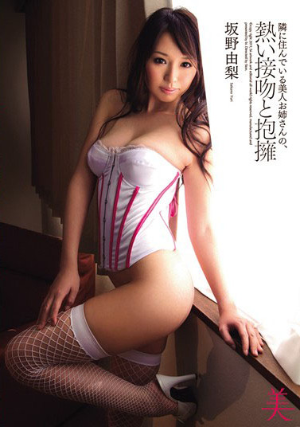
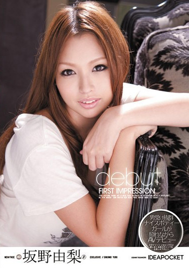
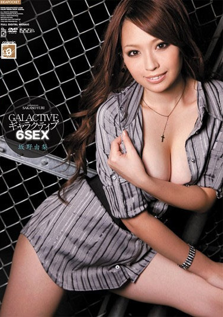
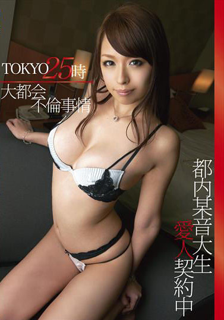
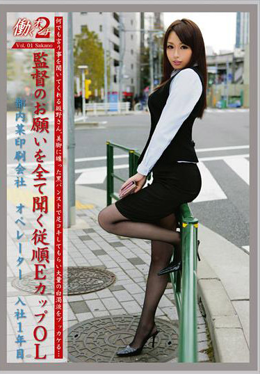
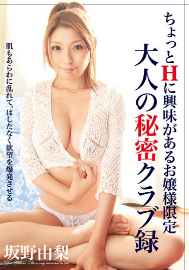

令人垂涎的肉体 坂野由梨
个人资料：
日文：さかのゆり
英文：Yuri Sakano
生日：1989/08/10
血型：O
身高：165 CM
三围: B85.W58. H84
罩杯：E
她是去年ideapocket的专属新人，不过待的时间很短暂，接下她就周游列国，除了去演伪素人外也前进步兵的最高学府东热进修，然后她就消失了。
其实这是「短打女优」最常见的型态，她们如狂风暴雨一样在短时间内将影片发行到极大值，然后钱到手了就立刻离开；虽然AV女优不是一个能够做个几年就下半辈子不愁吃穿的工作，不过比起老老实实地做上班族来说这仍然是一条赚钱的快捷方式，所以才会有这么多女优在引退后会选择复出。
其实她离开的时间并不长，之前也没有公告「卒业」或「引退」，所在这里我就不写她「复活」了；而且因为她之前是用「燃烧一瞬间」的方式发片，搞不好已经很多影迷根本不记得她的名字了，坂野由梨是个身材无敌的女优，165公分、E罩杯的她有胸也有腿，演出中举手投足无一不yin，但她的缺点也非常明显，不够漂亮的就数牙齿了.
這也就是為什麼在桐谷ユリア(桐谷yuria)之後，ideapocket先吸收了在MUTEKI發片大賣的藝能人原田明絵、再於3月推出新人「坂野由梨」的原因：只是很有趣，身為AV界的著名品牌、照理來說ideapocket應該會對即將出道的新人大書特書才對，不過這次他們卻反其道而行，只以「ナイスボディーガール」(nicebody gal)來形容這位女優─
看到這個宣傳標語後，我想ideapocket的用意很清楚了，他們傳達的訊息就是「雖然這位女優在之前沒有很漂亮的資歷、不過她擁有一副令人垂涎三尺的肉體」；而在這個基礎之下，idepaocket是回歸製作AV的本質，一方面展露坂野由梨的好身材、另一方面則是努力開發她的性感帶，畢竟這位女優的肉體就是她最大的本錢！
博主观点：身材很好，牙齿很难看，另外值得一提的是，在日本女优日益放宽尺度的今天，坂野MM开后门纳客啦
点评：面容 8.5 身材 9 表演 8.5 尺度 9 综合诱惑力 8.5
     